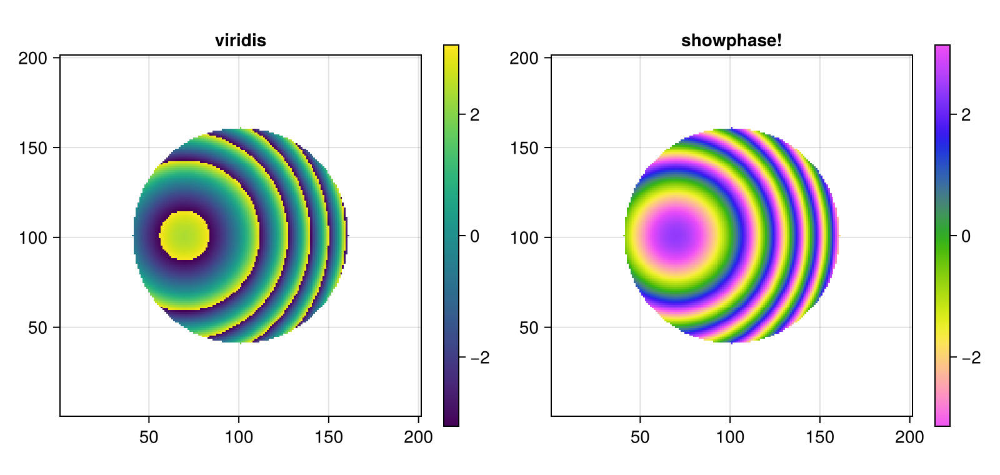
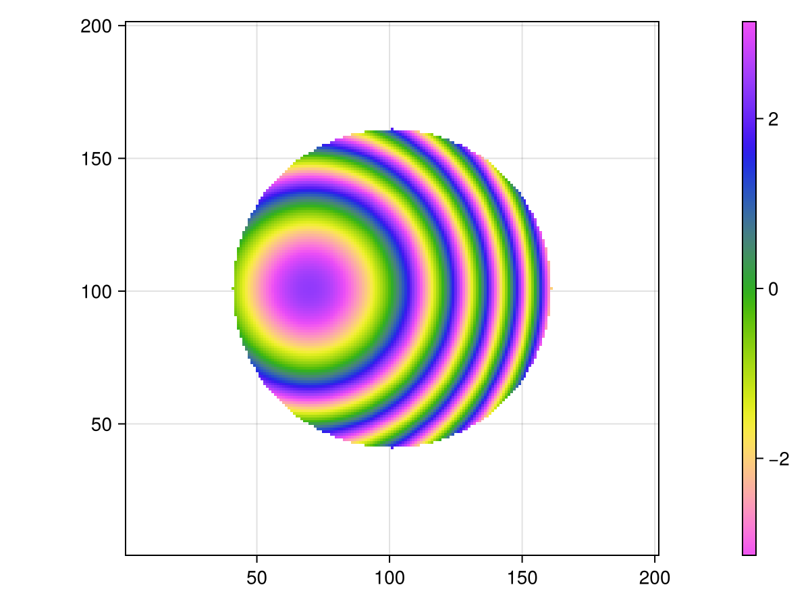
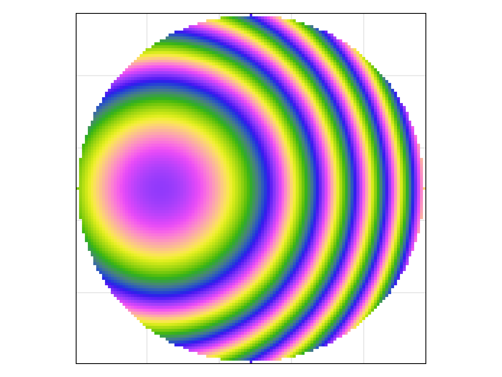
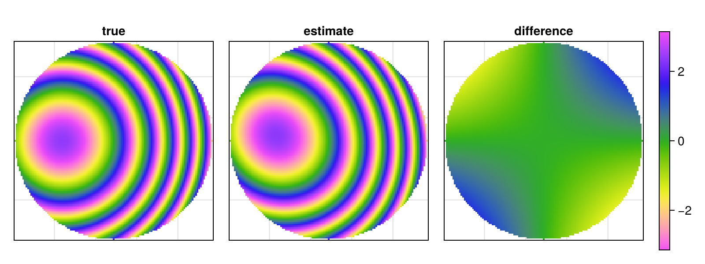

using PhasePlots
using CairoMakie
CairoMakie.activate!(; type="png")Phase maps
Phase is defined modulo $2\pi$: the values $-\pi$ and $\pi$ describe the same state. A phase map should therefore be shown with a cyclic colormap over the fixed range $(-\pi, \pi]$, so that the wrapping lines are not visible as edges. The functions showphase, showphase! and showphasetight do exactly that: they wrap the phase, use the cyclic colormap phasemap and the colour range (-π, π).
A test wavefront
Defocus plus tilt in a circular pupil of radius 0.6, sampled on the square [-1, 1]². Outside the pupil the phase is NaN and is not drawn. The array is sampled as A[j, i] = f(x[i], y[j]), hence frame=:domain below, see Array orientation.
xr = range(-1, 1; length=201)
yr = xr
pupil(x, y) = x^2 + y^2 <= 0.6^2
phase = [pupil(x, y) ? 40 * (x^2 + y^2) + 25x : NaN for y in yr, x in xr];Why a cyclic colormap
The same wrapped phase with a linear colormap (left) and with showphase! (right). With viridis each jump from $\pi$ to $-\pi$ shows up as a sharp yellow-blue edge, which is easy to mistake for a feature of the wavefront. With phasemap the colours at both ends of the range coincide and the jumps disappear.
wrapped = mod2pi.(phase .+ π) .- π
fig = Figure(; size=(800, 380))
ax1 = Axis(fig[1, 1]; title="viridis", aspect=DataAspect())
hm1 = showarray!(ax1, wrapped; frame=:domain, colormap=:viridis)
Colorbar(fig[1, 2], hm1)
ax2 = Axis(fig[1, 3]; title="showphase!", aspect=DataAspect())
hm2 = showphase!(ax2, phase; frame=:domain)
Colorbar(fig[1, 4], hm2)
fig
showphase
Creates a figure with the phase map and a colorbar and returns (fig, ax, cb). The phase does not need to be wrapped beforehand.
fig, ax, cb = showphase(phase; frame=:domain)
fig
showphasetight
Crops the array to the bounding box of its non-NaN values (the pupil) and, by default, hides the axis decorations. Convenient for compact panels.
fig, ax, hm = showphasetight(phase; frame=:domain)
fig
The second argument can be a position in an existing figure, which makes it easy to put several phase maps side by side. A typical case is comparing the true and an estimated phase and their difference:
estimate = phase .+ [8 * x * y for y in yr, x in xr] ## some error: astigmatism
fig = Figure(; size=(800, 300))
for (k, (arr, name)) in enumerate(
zip((phase, estimate, estimate - phase), ("true", "estimate", "difference"))
)
_, axk, _ = showphasetight(arr, fig[1, k]; frame=:domain)
axk.title = name
end
Colorbar(fig[1, 4]; colormap=phasemap, limits=(-π, π))
fig
The colormap and the theme
phasemap is an ordinary Makie colormap and can be used with any plot, e.g. heatmap(A; colormap=phasemap, colorrange=(-π, π)). phasetheme is a Makie theme with phasemap as the default colormap and the axes without spines, ticks and margins:
with_theme(phasetheme) do
heatmap(A; colorrange=(-π, π))
endThis page was generated using Literate.jl.